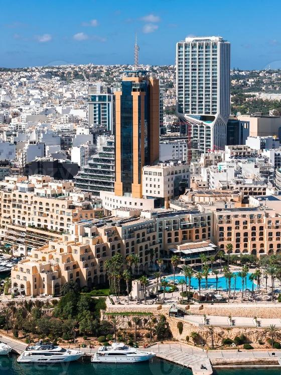
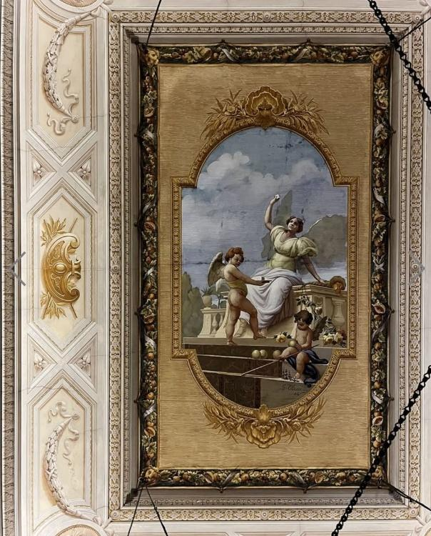

Our ceremony and reception are both in Naxxar, in the north of Malta — a small island, so most areas are within a 20–40 minute drive.

If the rate doesn’t apply automatically, enter corporate code 35238 under Special Rates.

Fly into Malta International Airport, approximately a 15-minute drive to St Julian’s.
Please note taxis and buses are available at Malta International Airport.
There are reserved rooms in the Hilton Hotel; nearby accommodation is also available.
Complimentary bus transfer from the Hilton Hotel in St Julian’s to Naxxar.
May in Malta is warm and bright, with a light breeze in the evening.